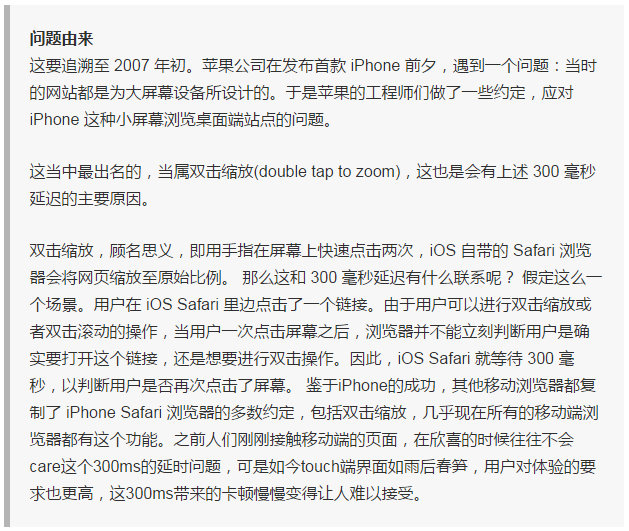

移动端事件从字面上我们就理解是在移动端上面去进行操作，触发什么，做出相对应的回应。而我们对于PC端都知道，接触的比多。基本事件有：onclickonmouseoveronmousemove...等事件。下面就了解下移动端事件。
一、移动端事件
touchstart：手指放到屏幕上时触发
touchmove：手指在屏幕上滑动式触发
touchend：手指离开屏幕时触发
var div = document.querySelector('div');
div.ontouchstart = function(){
this.background = 'red';
};
div.ontouchmove = function () {
this.background = 'purple';
};
div.ontouchend = function () {
this.background = 'green';
}
以上案例我们可以看到：
ontouchstart手指按下对于 PC端onmousedownontouchmove手指移动对于 PC端onmousemoveontouchend手指抬起对于 PC端onmouseup
但是我们会发现在谷歌模拟下，通过on方式 添加事件无效。那么有什么办法解决，就是通过 addEventListener()去监听。
var div = document.querySelector('div');
div.addEventListener('touchstart', function () {
this.style.background = 'red';
});
div.addEventListener(
'touchmove',
function () {
this.style.background = 'purple';
}
);
div.addEventListener(
'touchend',
function () {
this.style.background = 'green';
}
);
/* 事件监听
* 通过 addEventListener('不加on的事件名称',事件函数,冒泡或捕获)方式绑定事件;
* 绑定多少个事件就执行多少事件，不会有前后覆盖问题
* 在谷歌模拟器下有效
* */
二、移动端300ms点击延迟
一般情况下，PC端的click事件在移动端也可以使用。但是通常会出现300ms左右的延迟。也就是说，当我们点击页面的时候在移动端并不是立即作出反应，而是会等上一小会儿才会出现点击的效果。那么，移动端300ms的点击延迟是怎么来的呢？

请参考：《移动端Click300毫秒点击延迟的来龙去脉》
也就是说，移动端浏览器会有一些默认的行为，比如双击缩放、双击滚动。这些行为，尤其是双击缩放，主要是为桌面网站在移动端的浏览体验设计的。而在用户对页面进行操作的时候，移动端浏览器会优先判断用户是否要触发默认的行为。
三、点透问题
提起移动端点透的问题。可能有人会想，既然click点击有300ms的延迟，那对于触摸屏，我们直接监听touchstart事件不就好了吗？
使用touchstart去代替click事件有两个不好的地方：
- 1、touchstart是手指触摸屏幕就触发，有时候用户只是想滑动屏幕，却触发了touchstart事件，
- 这不是我们想要的结果。（误触）
- 2、使用touchstart事件在某些场景下可能会出现点透的现象。
CSS部分
div{
width:150px;
line-height:150px;
background:gold;
position: absolute;
top:0;
left:0;
opacity:0.6;
text-align:center;
}
HTML部分
<a href="http://baidu.com">移动端点透B</a>
<div>A</div>
JS部分
var div = document.querySelector('div');
div.addEventListener('touchstart', function () {
this.style.display = 'none';
});
通过上面案例可以看到，有两个元素A和B。B元素在A元素之上。我们在B元素的touchstart事件上注册了一个回调函数，该回调函数的作用是隐藏B元素。我们发现，当我们点击B元素，B元素被隐藏了，随后，A元素触发了click事件。
解决的方案：
- 1。 阻止默认事件 （部分安卓机不支持）
- 2。 像移动淘宝一样，不用a标签跳转 （用 window.location.href）,不在移动端使用鼠标事件
下面用原生JS，阻止默认事件解决这样的问题。
document.addEventListener('touchstart', function (e) {
e.preventDefault();
});
var aA = document.querySelectorAll('a');
for(var i=0;i<aA.length;i++){
aA[i].addEventListener('touchmove', function () {
//在a标签上移动，说明不跳转
this.onOff = true; // 移动时,不跳转
});
aA[i].addEventListener('touchend', function () {
//如果最开始没有在A标签上移动，就跳转、
if (!this.onOff){
window.location.href = this.href;
};
//没有移动 是false
this.onOff = false; //每次抬起 变成false
})
}
以上解决思路就是阻止默认事件，例如：A标签跳转、双击缩放、双击滚动。然后遍历每个A标签，进行监听判断如果在A标签上移动，说明不跳转。如果最开始没有在A标签上移动，就跳转。以上只是个人学习总结，毕竟只是临时的措施。而浏览器本身也有提供的方案，例如 Chrome 的 width=device-width 优化以及 Internet Explorer 的指针事件等，更属长久之计。